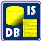
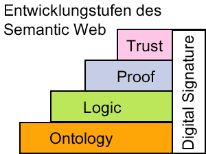
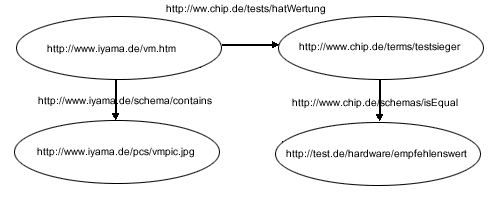

|
 |
WSI für Informatik, Universität Tübingen
Seminar „Konzepte von Informationssystemen“
Ausarbeitung: Semantic Web
Robert Sösemann, 20.06.01
Inhaltsverzeichnis
A Abstract 2
B Szenario – Warum wir ein besseres Web brauchen 2
1 Das WWW heute (2001) 2
2 Das WWW morgen (2010) 3
3 Motivation 3
C Das Semantic Web 4
1 Einführung 4
2 Wissensrepräsentation (Ontology) 5
3 Wissensverarbeitung (Logic) 5
4 Autom. Beweisführung (Proof) 6
5 Vertrauen/Sicherheit (Trust) 6
D Technische Umsetzungen 7
1 Ressourcendefinition mit XML/RDF 7
2 Ontologien mit RDF Schema/DAML+OIL 9
3 Weitere Umsetzungen (SHOE, Dublin Core) 11
E Ausblick und Fazit 12
F Semantic Web Tools & APIs 13
G Literaturangaben 14
H Empfohlene WWW-Resourcen zum Thema 14
Das heutige World Wide Web mit seiner HTML-basierten Hypertextstruktur hat die Art und Weise wie Menschen Informationen bereitstellen, beschaffen und benutzen, revolutioniert.
Nie zuvor war es für Privatpersonen, Unternehmen und Organisationen so einfach, auf derart umfangreiche Mengen Information zuzugreifen und sie zu bereichern.
Trotz aller unbestreitbaren Vorzüge, deckt gerade das unglaubliche Wachstum der verlinkten Daten und die damit immer schwierigere Suche durch den Menschen, die ernormen Schwachstellen des heutigen WWWs auf.
Die Vision eines semantischen Webs des WWW-Erfinders Tim Berners-Lee will viele dieser Probleme lösen und ist deshalb heute auch in aller Munde, wenn die existierende Technik an ihre Grenzen stößt.
Die folgende Seminarausarbeitung soll helfen, den oft zitierten und auch missinterpretierten Begriff des „Semantic Web“ zu durchleuchten, um zu verstehen, was er bedeutet und was nicht.
In einem einleitenden Zukunftsszenario sollen Vorzüge der Technik vorgeführt und anschließend um die dahinter stehenden Ideen vertieft werden. Anschließend werden bereits bestehende Umsetzungen vorgestellt.
Das folgende Szenario zeigt die Schwächen des heutigen Webs und gibt Motivation für eine Verbesserung.
[ Der Web-Design Freelancer Tim hat ein lukratives Angebot für einen eiligen Auftrag bekommen. Dafür benötigt er für sein PC-System schnell bessere Komponenten (Prozessor, Grafikkarte und Monitor). Um Geld und Zeit zu sparen, will er die Teile per Internet bestellen und dann selbst einbauen. Auch der Kauf gebrauchter Teile kommt für ihn in Frage. Um später bei der Benutzung und beim Einbau keine Überraschung zu erleben, will er nur als „gut“-getestete und zu seinem System kompatible Teile kaufen. Es ergeben sich für den Onlineeinkauf folgende Prioritäten:
Übereinstimmung mit den geforderten Leitungsmerkmalen
Kompatibilität zum bestehenden System
Hochwertige Qualitätskomponeten (Testsieger in ihren Klassen)
Schnelle Lieferbarkeit (am besten über Nacht)
Niedriger Preis (unter 3000 DM, eventuell auch gebraucht)
Nach der Aufstellung dieses „Pflichtenhefts“ loggt sich Tim ins Internet ein. Wir schreiben den...
...20. Mai 2001. - Für aktuelle, unabhängige Testberichte besucht Tim die Webseite der Computerzeitschrift CHIP. Er liest dort alle Bewertungen über die gesuchten Geräte und durchforstet meterlange Vergleichstabellen. Nach Stunden und einiger Verwirrung über das große Angebot macht er sich mit je 3 Alternativen auf die Suche nach einer zweiten Testmeinung. Nach längerer Suche wird er bei der Stiftung Warentest fündig. Danach bleiben nur noch 2 seiner Alternativen übrig. Um mit der Kompatibilität der Grafikkarte auf Nummer Sicher zu gehen, quält er sich noch durch kryptische Servicesites zweier Hersteller. Mit ungefähren Preisangaben im Kopf benutzt Tim die Preisvergleichssite DEALTIME , um die preiswertesten Shops zu finden. Zwar erhält er dort viele Treffer, allerdings wieder keine Lieferbedingungen. In den folgenden Stunden durchsucht er jede Webseite per Hand nach dem Kriterium "schnelle Lieferbarkeit".
Für zwei der drei Teile erfüllt der Online Shop ARLT die Vorraussetzungen. Für den Monitor muss er noch einmal zurück zu DEALTIME. Trotz guter Lieferzeiten bei Händler ALTERNATE, lässt ein zu hoher Gesamtpreis seine Suche wieder stocken. Ohne zu wissen, welche der Komponenten überteuert ist, besucht Tim die Auktionssite EBAY und den Online-Gebrauchtmarkt SPERRMÜLL. Dort ließe sich der Preis drücken, allerdings müsste er dann auf ein anderes Monitormodell umsteigen. Um sich der Qualität dieses Models sicher zu sein, besucht er wieder die Site von CHIP. Der Monitor wird empfohlen, ist aber allerdings bei Tim’s Rückkehr schon versteigert. Entnervt entschließt er sich zum Kauf eines viel teureren Monitors bei der Firma ARLT, die ihn mit schnellerer Lieferung ab 3 Teilen lockt. Letztendlich musste Tim bei 4 seiner 5 Prioritäten Abstriche machen.
...20. Mai 2010. – Tim startet seine Semantic Web Agent Software. Nach kurzer Zeit hat er per einfacher Regeln dem Agent den ersten Auftrag erteilt. Es sollen aktuelle Computertestberichte nach Testsiegern seiner drei Kaufwünsche durchsucht werden. Anhand der Bookmarkliste kennt der Agent bereits Tim’s favorisierte Sites; solche die er oft besucht und denen er vertraut. Zusätzlich befragt er noch befreundete Agentenmodule nach weiteren renommierten Testsites. Nach wenigen Sekunden bekommt Tim eine Liste mit je vier Testsiegern für Monitor, Grafikkarte, und Prozessor. Diese Komponenten wurden gleichzeitig von 3 unabhängigen Sites als „gut“ eingestuft.
Tim sichtet kurz die Zusammenfassungen, die der Agent aus den gefunden Informationen erstellt hat, und bittet alle Produkte auf ihre Kompatibilität abzuprüfen. Der Agent erfragt beim Betriebssystem die Leistungsdaten des PCs und vergleicht sie mit denen auf den Servicesites der Hersteller.
Da Tim nun nur noch am Resultat interessiert ist, also einer Liste passender Onlineshops, erstellt er einen kompletten Regelsatz mit all seinen Prioritäten und Vorraussetzungen und verlässt den Computer für eine Kaffeepause.
Der Agent fragt bei einem Suchservice eine Liste renommierten Computershops ab, durchsucht diese nach den gewünschten Modellen, macht Preisvergleiche und überprüft die Lieferzeiten.
Auch eventuelle Rabatte beim Kauf mehrerer Komponenten berücksichtigt er.
Als nach etlichen Suchzyklen fast ein Optimum aller Prioritäten erreicht ist, findet sich bei EBAY in einer Sofortversteigerung ein gleiches, aber preiswerteres Exemplar des Monitors. Über das Mobiltelefon holt sich der Agent bei Tim die Authorisierung um mitzusteigern. Knapp eine Stunde nach dem Tim seinen Agenten beauftragt hat, ist alles abgeschlossen und Tim kann die Bestellung und Lieferung aller Teile bis zum nächsten Morgen bestätigen. Froh, dass der Gesamtpreis fast 500 DM unter dem Maximum liegt, ruft Tim seinen Auftraggeber an, um seine sofortige Mitarbeit am Projekt anzukündigen.
Zwar erscheint das Szenario etwas überspitzt, ist jedoch der krasse Widerspruch von riesiger „theoretisch“ verfügbarer Datenmenge im Web und der Schwierigkeit auch nur die einfachsten Informationen schnell zu finden, nur zu bekannt. Zum Alltag eines jeden Surfers gehören Suchmaschinen, die entweder gar keine oder tausende scheinbar relevante Dokumente finden. Mit zunehmender Größe des Webs und der Vielfältigkeit der Inhalte zeigt sich, dass das reine Indizieren bzw. Zählen von Worthäufigkeiten selten die echte Bedeutung eines Dokumentes erschließen kann.
Der Grund dafür ist, dass die Inhalte im heutigen WWW fast ausschließlich zur Wahrnehmung durch den Menschen gemacht wurden. Sie spiegeln all die Doppeldeutigkeiten und Unklarheiten menschlicher Sprache wider. Mit zunehmender Größe wird allerdings die Unüberschaubarkeit und die Komplexität für Menschen immer unhandbarer. Maschinen (Soft- oder Hardware) wären dafür viel besser geeignet. Heutzutage scheitert dies aber bereits an der Undefiniertheit der Websprache HTML. Logische , also inhaltsbeschreibende und formatierende Tags werden gemischt und teilweise in ihrer eigentlichen Funktion missbraucht.
Die wichtigste Vorraussetzung für eine Verbesserung des WWWs ist also, für Maschinen die Bedeutung (Semantik) einzelner Inhalte erschließbar zu machen. Sie benötigen dazu eine standardisierte, wohldefinierte und damit maschinenlesbare Metabeschreibung der Daten.
Der Begriff wurde vom Tim Berners-Lee und anderen Kollegen beim W3C in seiner „Roadmap for a semantic web“ [1] geprägt.
Laut dortiger Definition werden im „Semantic Web“:
Daten (Ressourcen) semantisch dargestellt und
Daten über eindeutige standardisierte Bezeichner identifiziert (sog. URIs – Uniform Ressource Identifiers)
Zusätzlich zu den Informationen die der Mensch interpretieren kann, soll das WWW der Zukunft auch semantische Metadaten liefern. Diese erklären z.B. was eine Ressource ist, was sie bedeutet und welche Eigenschaften sie hat.
Während das „alte“ WWW eher mit einem unstrukturierten Text zu vergleichen ist, ist das Semantic Web und seine Datenhaltung ähnlich einer relationalen Datenbank.
In einzelnen Anwendungsgebieten haben normale Datenbanken gewisse Standardisierungen, z.B. wie Spalten benannt werden, was sie bedeuten und wo sie in der DB stehen. Dies wäre im offenen, jedermann zugänglichen Web kaum möglich. Auch scheint eine Festlegung auf eine einzige gültige Bedeutungsbeschreibung weder realistisch noch wünschenswert. Deshalb müssen auch die Gemeinsamkeiten zwischen Datenbanken, die sich in Struktur und Benennung unterscheiden, festgehalten werden.
Nur dann könnte der Softwareagent aus dem Szenario erkennen, dass eine Bewertung „empfehlenswert“ auf der CHIP-Site mit „sehr gut“ bei der Stiftung Warentest vergleichbar ist.
Eine weitere wichtige Vorraussetzung für ein erfolgreiches Semantic Web ist die Allgemeingültigkeit und Universalität der Datendarstellung, da sich weder zukünftige Erweiterungen, noch alle Nutzungsarten abschätzen lassen.
Anhand von Wissen aus den unterschiedlichsten Forschungsgebieten (z.B. Knowledge Representation, Information Retrieval und Logik) haben das WWW Consortium (W3C), namhafte Universitäten und zahlreiche IT-Firmen verschiedene Standards und Implementierungen dieser Forderungen umgesetzt.

Abb. 1: vereinfachtes Layer-Schema der offiziellen W3C-Grafik
Auf dem Weg vom heutigen WWW zum semantischen Web von morgen, sollen nach Berners-Lee verschiedene aufeinander aufbauende Layer (siehe Grafik) geschaffen werden. Die wichtigsten Stufen werden nachfolgend beschrieben.
Wissen ist im allgemeinen die Bechreibung von Objekten und ihren Zusammenhängen. Im Semantic Web werden Objekte Ressourcen genannt. Eine Ressource kann alles sein, eine Webseite, eine Firma, eine Person, ein Gegenstand oder ein abstraktes Konzept wie in unserem Szenario die Testwertung. „Wertung“ hat für verschiedene Menschen und in verschiedenen Kontexten unterschiedliche Bedeutungen. Daher würde eine einheitliche, feste "webweite" Definition keinen Sinn machen. Damit jeder also seine eigene Ressourcebeschreibung festlegen kann, weist man ihnen eine absolute, einheitliche und eindeutige URI (=Uniform Ressource Identifier) zu.
Trotz seiner Ähnlichkeit zur URL (=Uniform Ressource Locator), wird bei der URI nicht unbedingt der Hinweis auf den Fundort irgendeiner Datei gegeben. Beispielsweise ist http://www.chip.de/terms/wertung kein Verweis/Zeiger auf eine Datei/Verzeichnis, sondern eine Art Garant, dass es zu dieser Ressource nur eine Definition gibt. Wo diese definiert wird, ist hier noch nicht gesagt.
Bermerkung: Aus den vorliegenden Dokumenten wurde nicht klar, ob es sich bei URIs immer um Pfade mit existierenden Domains und realen Protokollen (wie http) handeln muss. Das W3C empfiehlt aber an anderer Stelle, dass die Person, die Vokabulare in einem bestimmten Namespace definiert, der Eindeutigkeit wegen auch Besitzer der NS-Domain sein sollte. Desweiteren wird empfohlen, mit einer URI auf eine passende Ontologie (z.B. ein RDF Schema) zu verweisen. Damit würden für eine URI, dieselben Konventionen gelten wie für URLs.
Um nun Objekten Eigenschaften zuzuweisen und sie zu beschreiben, hat man sich im ersten Schritt des Semantic Webs – dem Ontology Layer – auf folgendes einfaches Schema geeinigt.
Man beschreibt einen Zusammenhang wie „Iiyama Vision Master wurde bei CHIP als empfehlenswert getestet“ in Form eines Tripels von:
<Subjekt><Prädikat><Objekt>
Dabei sind Subjekt und Objekt auf jeden Fall URIs und das Prädikat entweder ein Literal (Zeichenkette) oder auch eine URI. Unser Beispiel könnte also so aussehen:
<www.iiyama.de/product/visionmster> <www.chip.de/tests/hatWertung> <www.chip.de/tests/empfehlenswert>
Da alle drei Elemente URIs sind ,ist eindeutig garantiert,
welcher "Visionmaster" gemeint ist
dass es sich um eine Wertung bei CHIP handeln muss
dass es sich bei „gut“ um eine Definition von CHIP handeln muss
In Kapitel 4 wird gezeigt, wie mit Hilfe von RDF und XML solche Ressourcenbeschreibungen realisiert werden können.
Damit ein derartiges Bedeutungsnetzwerk von Maschinen verarbeitet werden kann, müssen sie nicht in der Lage sein, die echte Bedeutung des Wortes „gut“ oder „Wertung“ zu verstehen. Es reicht ihnen ein Regelwerk, mit dem sie logische Rückschlüsse ziehen können (automatic reasoning/inference). Aus diesem Grund heißt die zweite Ebene des Semantic Web auch Logic Layer.
Um vergleichen zu können, muss die Agenten-Software in unserem Szenario wissen, dass es sich beim Prädikat hatWertung „empfehlenswert“ auf den CHIP-Seiten um etwas ähnliches handelt, wie bei hatTestergebnis „gut“ bei der Stiftung Warentest und wie sie die beiden Skalen eventuell konvertieren kann.
So ließe sich aus „Alle Testsieger haben die Wertung sehr gut“ und „Iiyama ist ein Testsieger." schließen, dass Iiyama die Wertung "sehr gut" haben muss.
Ein Mittel solche Abhängigkeiten und Hierarchien zu definieren bieten sog. Ontologien.
In Anlehnung an die philosophische Lehre vom Sein, definieren Ontologien für ein eingeschränktes Anwendungsgebiet (Domain), Hierarchien von Einheiten und Untereinheiten, Eigenschaften und Relationen. Nur die Verknüpfung der "aussagelosen" Daten mit einem solchen Modell erlauben es, Hintergrundwissen zu nutzen und den Kontext der Nutzeranfrage zu verstehen.
Es existieren viele Sprachstandards um ontologische Regelsätze zu definieren. Dabei treten Begriffe wie Frame (Objekt/Konzept) und Slot (Untereinheit/Eigenschaft) oder Klasse und Subklasse auf.
Für eine exemplarische Vertiefung siehe auch Kapitel 4.2 über XML-Schema/OIL/DAML.
Einen Schritt weiter als nur aus bereits bekannten Regeln logische Schlüsse zu ziehen, geht die Idee der 3. Stufe des Semantic Web – dem Proof Layer. Das Verfahren geht dort genau in die andere Richtung.
Für eine Behauptung (= Statement) wie: „Iiyama Visionmaster ist mehr als 10x Testsieger“ würde eine sog. Heuristic Engine solange das Semantic Web nach Regeln und Ontologien durchsuchen, bis die Aussage entweder belegt oder widerlegt werden kann. Das Anwenden und Folgern aus den Regeln übernimmt der Logic Layer.
Dabei entstehen mehrere Probleme:
man kann nicht sicher sein, dass sich überhaupt ein Beweis erbringen lässt. Dies ist der Fall, wenn nicht ausreichend Regeln definiert sind. -> unendliche Suche
es ist schwer, den Zeitpunkt einer Lösung abzuschätzen. Selbst bei ausreichenden Regeln, kann es eine undefinierte Zeit dauern, sie im riesigen Web zu finden und abzuarbeiten.
-> Lösung oft scheinbar unendlich
Ein automatischer Beweiser findet sich also bis zu einer eventuelle Lösung in einem undefinierten Zustand. Bis heute gibt es keine Realisierung des Proof Layers und aller Folgelayer des Semantic Webs.
Einem weitaus realeren Problem versucht der Trust Layer und die Digitale Signatur zu begegnen.
Im Semantic Web kann jeder alles behaupten und definieren. Automatisches Folgern und vorallem das Beweisen machen aber nur dann Sinn, wenn man auch Vertrauensprinzipien und Authentifzierungsmechanismen zu Verfügung hat. In unserem Zukunftsszenario muss der Agent z.B. entscheiden können, von welchen anderen Agenten er Tips annimmt und von welchen nicht. Ebenso muss er bei der Gleichheitsregel der Wertungen „sehr gut“ und „empfehlenswert“ sicher sein, dass diese wirklich von CHIP und der Stiftung Warentest stammt und nicht von einem sabotierenden Dritten.
Um die Echtheit/Unverändertheit einer Information festzustellen, verwendet man Verfahren der Digitalen Signatur. Dabei werden Daten meist mit einem sog. "public-" und "private key" verschlüsselt und mit einem geprüften Echtheitszertifikat versehen.
Um aus dem Semantic Web wirklich Nutzen und neue Informationen zu ziehen, eignet sich als Vertrauensprinzip ein einfaches manuelles Festlegen glaubwürdiger Quellen (üblich bei Sicherheitseinstellungen aktueller Browser) nicht. An dieser Stelle kommt der Begriff „Web of Trust“ ins Spiel. Vorstellbar ist folgendes Beispiel:
Der Agent weiß, dass Tim der Zeitschrift CHIP vertraut. CHIP wiederum vertraut allen seiner Redakteure und Mitarbeiter, sowie anderen Quellen (z.B. dem Partner Stiftung Warentest).
Tim vertraut also implizit durch CHIP auch zu einem gewissen Grad der Stiftung Warentest. Tim vertraut auch der Zeitschrift CT, die mit Tests der Stiftung Warentest eher schlechte Erfahrungen hat.
Aus den unterschiedlichen impliziten und expliziten „Trust“- und „Distrust“-Beziehungen errechnet eine Agentensoftware ein gewichtetes Vertrauensnetz, um zu entscheiden oder anzugeben, wie glaubhaft eine Information ist.
Von den eben genannten Stufen ist bisher nur der Ontology-Layer und Teile des Logic-Layers mit Standards und Implementationen umgesetzt. Die wichtigsten dieser Techniken werden im folgenden vorgestellt.
XML ist nicht nur im World Wide Web von heute eine grosse Verbesserung, wo es Interoperabilität von Daten und eine Erweiterung von HTML erlaubt. XML spielt auch beim Beschreiben von Ressourcen und Definieren von Ontologien im Semantic Web eine grosse Rolle.
XML macht es einfach, beliebige Daten über das Web auszutauschen. Es erlaubt jederman, eigene Datenformate zu definieren und daraus Dokumente zu erzeugen. Damit die verschiedenen Dokumentenformate von verschiedenen Gruppen verstanden und konvertiert werden können, gibt es Document Type Definitions (DTDs), die die Syntax jeder XML-Datei beschreiben.
Wie auch schon HTML, enthalten XML-Dokumente Tags, die die logische Bedeutung bestimmter Dokumentteile auszeichnen. Allerdings kann in XML jeder solche Tags selbst nach seinen Bedürfnissen definieren. Eine weiterer Unterschied ist, dass es bei XML keine Tags zur Formatierung des Inhaltes gibt. So wird dort also im Gegensatz zu HTML sinnvollerweise Datenstruktur von Formbeschreibung getrennt. (Die Darstellung bzw. Ausgabe von XML wird durch XSL-Stylesheet geregelt.)
Der Satz:
„Der Iiyama Vision Master ist Testsieger bei Chip.“
könnte in XML so aussehen:
...
<article>
Der <products href=“www.iiyama.de/vm.htm“>Iiyama Vision Master</products> ist <wertung>Testsieger</wertung> bei <infosite href=www.chip.de“>Chip</infosite>
</article>
...
Damit die unterschiedlichsten Definitionen und Interpretationen von product klar getrennt werden können und um Namenskonflikte bei der späteren Verwendung in anderen Systemen zu vermeiden, weist man ihnen sog. XML-Namespaces (xmlns) zu.
So legt:
...
<article xmlns:iiyama ="http://www.iiyama.de/vm.htm"
xmlns:chip="http://www.chip.de/terms" >
Der <iiyama:products href=“www.iiyama.de/vm“>Iiyama Vision Master</iiyama:products> ist <chip:wertung>Testsieger bei <a href=www.chip.de“>Chip</a>
</article>
...
fest, dass product im Namespace von Iiyama und Testsieger bei Chip definiert ist.
XML allein ist für einen Umsetzung des Ontology-Layers allerdings nicht genug. Viele Forderungen und Einschränkungen der XML-Syntax wirken der Vorraussetzung der maximalen Anpassbarkeit (=Scalability) des Semantic Webs entgegen. Mit XML allein würden sich z.B. folgende Probleme ergeben:
nicht möglich, inhaltliche Zusammenhänge darzustellen
syntaktische Variationen (<name> als Element und name= als Attribut) werden nicht erkannt
logische Verknüpfung von Daten nicht möglich
Um diesen Problemen zu begegnen und der Forderung nach größtmöglicher Universalität nachzukommen, definierte das WWW Consortium das sogenannte Ressource Description Framework (RDF). Die oben vorgestellten Triplets sind ein Teil davon, da sie wegen ihrer Einfachheit einen "kleinsten gemeinsamen Nenner" aller Metasprachen dastellen.
Mehrere Triplets (Ressourcen und Prädikate) lassen sich als RDF-Graph darstellen:

Da es sich bei RDF aber nur um ein abstraktes, konzeptuelles Framework handelt, braucht es für eine konkrete Umsetzung XML; oder besser RDF/XML.
Eine der möglichen Arten, das obige Beispiel in XML/RDF zu schreiben, wäre:
<?xml version="1.0"?>
<rdf:RDF
xmlns:rdf="http://www.w3.org/1999/02/22-rdf-syntax-ns#"
xmlns:chip="http://www.chip.de/terms"
>
<rdf:Description rdf:about="http://www.iiyama.de/vm.htm">
<chip:hatWertung rdf:resource="http://www.chip.de/terms/testsieger" />
</rdf:Description>
</rdf:RDF>
...
Da RDF XML verwendet, werden alle Daten in das XML-Element <rdf:RDF> eingebettet, das vorher mit seinen Attributen als Namespace definiert wird. Beschreibungen werden in einem oder mehreren <RDF:Description> gekapselt. Im Beispiel beschreibt das Attribut about die Ressource mit einer URI. Der Folgetag , die im chip-Namespace definierte Eigenschaft/Property hatWertung mit dem Wert (Object) Testsieger komplettiert das Triplet.
Ein Triplet aus einer Ressource + Property + Value nennt man in RDF wegen seines Aussage-charakters auch Statement.
Bis jetzt wurde noch nicht erklärt, was sich wirklich hinter den Namespacedefinitionen verbirgt, also wo eigentlich Prädikate wie "Testsieger" definiert werden. Auch die Frage wie die RDF-Statements in ein größeres System einer Domain eingeordnet werden können, ist noch unbeantwortet geblieben. An dieser Stelle kommt RDF Schema (RDFS) und der Ontology Inference Layer (OIL) der Darpa Agent Markup Language (DAML) ins Spiel.
Wie bereits erwähnt, sind Ontologien Klassifizierungsschemata oder Hierarchien, die wie eine Art Schablone beschreiben, was für eine Domain typisch ist und wie sie funktioniert. So könnte in unserem Szenario eine Produktontologie sagen, was ein Produkt ist und was seine Eigenschaften sind. Solche Einordnungen können durch ein Frame-Slot Modell oder auch durch die Untergliederung in Klassen, Unterklassen und ihre Properties getroffen werden.
In OIL, der Ontologybeschreibungssprache von DAML werden beide Konzepte vermischt. Im fogenden Beispiel ist ausschnitthaft unsere Produktontology in reinem OIL und seiner XML-Form (Serialization) gezeigt:
|
|
Da in solchen Ontologien ein fester Wortschatz (also Worte und ihre Bedeutung) definiert wird, spricht man oft auch von sog. Vokabularen(= Vocabularies). Schemata definieren also für eine Domain Vocabularies.
Ohne Vokabulare müsste die Datenhaltung im Semantic Web wie in einer standardisierten Datenbank funktionieren, wo alles mit Abmachungen und Standardisierungen genau festgelegt ist.
So wäre z.B. in der CHIP-Datenbank für die beste Wertung genau ein einziger gültiger Stringwert in der Spalte "Wertung" erlaubt, nämlich "Testsieger".
Beim Sematic Web handelt es sich aber um ein offenes System, wo es vielen, z.B. der Stiftung Warentest möglich sein muss, die beste Wertung als "sehr gut" zu definieren.
Damit ein Agent trotz der Unterschiede einen Vergleich, also eine Konvertierung der beiden Ressourcebeschreibungen vornehmen kann, könnte z.B. bei CHIP das folgende RDF-Schema abgelegt sein:
@prefix chip: <http://www.chip.de/terms/>.
@prefix test: <http://www.stiftungwt.de/tests/>.
@prefix rdfs: <http://www.w3.org/2000/01/rdf-schema#>.
# Ein "Testsieger" bei CHIP kriegt immer "sehr gut" bei TEST:
chip:testsieger rdfs:subClassOf test:sehr_gut .
Um die Ähnlichkeit zu zeigen, wurde hier das vordefinierte Prädikat subClassOf verwendet. Bei RDF-Schema handelt es sich um eine aktuelle Empfehlung des W3C von März 2000. Dort werden wenige, sehr allgemein gehaltene Prädikate (wie subClassOf) definiert.
Dazu gehören auch z.B.
rdfs:subPropertyOf = erweitert rdf:Property um Eigenschaftshierarchien (Property=Eltern, Subproperty=Mutter)
rdfs:Class, rdfs:subClassOf, rdfs:type = Klassen-/Subklassendefinition, Typisierung
rdfs:domain = beschränkt die Anzahl gültiger Dokumente für eine Domain
rdfs:range = legt fest in welchem Rahmen sich die Werte eines Properties bewegen
rdfs:Container = sog. Utilitykonzept, kapselt Ressourcensammlungen z.B. einer Domain
rdfs:constraintProperty = legt Einschränkungen einer Ressourceeigenschaft fest
Reichen diese Klassifizierungen für eine Anwendung nicht aus, sind sie beispielsweise zu allgemein, lassen sich eigene, konkretere Schemata definieren.
So beschreibt z.B. die DARPA Agent Markup Language (Forschungsarbeit des U.S. Defense Advanced Research Project seit 2000), ein Prädikat inverse für den folgenden Zweck:
Um aus:
<timbl@w3c.org> is old:inventor of <http://www.w3c.org/worldwideweb> .
zu machen:
<http://www.w3c.org/worldwideweb> new:hasInventor <timbl@w3c.org> .
braucht man das Schema:
# [X old:inventor Y] is the same as [Y new:hasInventor X]
old:inventor daml:inverse new:hasInventor .
Anmerkung:
In manchen Fällen könnte man die Vocabularies statt mit Schemata auch durch die klassischen DTDs definieren.
DTDs haben aber einige Nachteile:
fehlende Typisierung (nützlich z.B. bei value-type)
Berücksichtigung der Tag-Reihenfolge (unwichtig bei Ontologien)
Ein weiterer Grund ist die Tatsache, dass die Syntax von DTD selbst nicht in XML ausgedrückt werden kann, was eine Einschränkung der Interoperabilität von XML ist. Laut W3C sollen daher DTDs langsam komplett durch Schemata ersetzt werden.
Ganz ohne XML kommt SHOE aus. SHOE, die Simple HTML Ontology Extension, wird seit 1995 als Forschungsprojekt der University of Maryland, USA entwickelt.
Anstatt Standards und Vorschläge des W3C abzuwarten, setzte man sich bei SHOE das Ziel, eine einfache semantische Erweiterung normaler HTML-Dokumente zu schaffen. Statt ganz neue Markup-Sprachen zu schaffen, entschied man sich für eine Einbettung von Meta-Tags in HTML.
Der folgende Ausschnitts aus einem SHOE-erweiterten HTML-Dokuments erläutert die wichtigsten Sprachelemente:
<HTML>
<HEAD><TITLE>Iiyama Product Ontology</TITLE>
// Definition des SHOE DTD Fundorts
<META HTTP-EQUIV="SHOE" CONTENT="VERSION=1.0"></HEAD>
<BODY>
// Definition einer eindeutigen Ontology mit ID
<ONTOLOGY ID=" iiyama-product-ontology " VERSION="1.0">
// Verwenden, Erben von anderen Ontol.
<USE-ONTOLOGY ID="base-ontology" VERSION="1.0" PREFIX="p"
URL="http://www.iiyama.de/SHOE/base.html">
// Kategorien und Hierarchie definieren
<DEF-CATEGORY NAME="product" ISA="p.SHOEentity">
<DEF-CATEGORY NAME="monitor" ISA="product">
<DEF-CATEGORY NAME="flatscreen" ISA="monitor">
<DEF-CATEGORY NAME="price" ISA=" p.SHOEentity ">
...
// Relationen definieren
<DEF-RELATION NAME="hasPrice">
<DEF-ARG POS="1" TYPE="product">
<DEF-ARG POS="2" TYPE="price">
</DEF-RELATION>
<DEF-RELATION "samePrice">
<DEF-ARG POS="1" TYPE="A">
<DEF-ARG POS="2" TYPE="B">
</DEF-RELATION>
// explizite Logikregeln definieren
<DEF-INFERENCE>
<INF-IF>
<RELATION NAME="samePrice">
<ARG POS="1" VALUE="y" VAR>
<ARG POS="2" VALUE="x" VAR>
</RELATION>
<RELATION NAME="hasPrice">
<ARG POS="1" VALUE="x" VAR>
<ARG POS="1" VALUE="p" VAR>
</RELATION>
</INF-IF>
<INF-THEN>
<RELATION NAME="hasPrice">
<ARG POS="1" VALUE="y" VAR>
<ARG POS="2" VALUE="p" VAR>
</RELATION>
</INF-THEN>
</DEF-INFERENCE>...
Um später Elemente einer HTML Seite in diese Domain sematisch einzuordnen, werden Instanzen der eben definierten Klassen (DEF-CATEGORY) gebildet und den einzelnen Daten zugeordnet.
Anmerkung:
Da die Entwicklung von SHOE noch vor der Ausarbeitung der "Semantic Web Roadmap" von Tim Berners-Lee begann, sind viele der vorgestellten Schichten des Layermodells hier gar nicht implementiert. Statt einem echten automatischen Schlussfolgern gibt es in SHOE z.B. nur vorgegebene "hart-codierte" Regeln.
-
Eher in die Richtung eines konkreten Implementation der W3C Empfehlungen, geht das Dublin Core Metadata Element Set (DCMES) der Dublin Core Metadata Initiative. Seine Vertreter aus Wirtschaft und Forschung erarbeiten dort parallel zu RDF einheitliche Vocabularies bzw. Schemata. In Anlehnung an das Lego-Bauklotzsystem, werden die 15 relativ weitgefassten Kategorien von Dublin Core auch als "semantic building blocks of the web" bezeichnet.
Wie RDF benutzt auch Dublin Core XML. Es wird daher im Beispiel auch genauso verwendet.
<?xml version="1.0"?>
<rdf:RDF
xmlns:rdf="http://www.w3.org/1999/02/22-rdf-syntax-ns#"
xmlns:rss="http://purl.org/rss/1.0/"
xmlns:dc="http://purl.org/dc/elements/1.1/">
<rss:channel rdf:about="http://www.xml.com/xml/news.rss">
<rss:title>XML.com</rss:title>
<rss:link>http://xml.com/pub</rss:link>
<dc:description>
XML.com features a rich mix of
information and services for the XML community.
</dc:description>
<dc:subject>XML, RDF, metadata, information
syndication services</dc:subject>
<dc:identifier>http://www.xml.com</dc:identifier>
<dc:publisher>O'Reilly & Associates, Inc.</dc:publisher>
<dc:rights>Copyright 2000, O'Reilly &
Associates, Inc.</dc:rights>
</rss:channel>
</rdf:RDF>
Bei dem Beispiel handelt sich es um eine spezielle Anwendung und Erweiterung von Dublin Core durch die RSS-Community (siehe http://www.egroups.com/group/rss-dev) . Für die Erstellung komplexer Sitezusammenfassungen und sog. Syndication Services, werden die mächtigen, modularen Fähigkeiten von RDF verwendet, um Semantiken aus Dublin Core mit eigenen Vokabeln (syndication, aggregation, threading) zu erweitern.
Viele Ideen und Techniken aus Tim Berners-Lees „Roadmap for a semantic web“ sind nicht neu. Die meisten Ideen und Forschungsergebnisse stammen aus Gebieten wie Knowledge Representation oder Information Retrieval. Der Durchbruch einer neuen Technik wird aber nicht allein durch ihre Machbarkeit bestimmt, sondern zu einem Großteil von ihrer wirtschaftlichen und gesellschaftlichen Akzeptanz.
Tim Berners-Lee hat dies bereits in den Neunzigern für das WWW erkannt und die Prinzipien „einfache Technik – viele Möglichkeiten“, „Erweiterbarkeit“, und „dezentrale Organisation“ erfolgreich in den HTML/HTTP Standards realisiert. Auch damals hat er das Prinzip Hypertext zwar nicht erfunden, aber es massentauglich gemacht. Dasselbe könnte ihm und seinen Kollegen beim W3C auch jetzt wieder gelingen, da schrittweise Entwicklung und ein - was die Erweiterbarkeit betrifft- nach oben offener Standard die Grundlagen des Semantic Webs darstellen.
Eine große Stärke ist dabei sicher, dass das Schichtenmodell für das Semantic Web auf den existierenden Standards für XML und XML-Schemata aufbaut, um semantische Informationen auf syntaktischer Ebene zu transportieren. Allerdings wird durch RDF und RDFS die Ausdrucksfähigkeit von XML deutlich erweitert. Auch sind RDF-Schemata durch ihren Ontologiecharakter nicht direkt mit XML-Schemata zu vergleichen.
Die Kritik an Berners-Lees Vision ist jedoch recht groß. Sie mahnen an, dass seine Spezifikationen für konkrete Entwicklungen zu unpräzise seien und RDF für die Massenanwendung zu abstrakt und kryptisch sei. Andere hingegen halten es generell für unmöglich, Maschinenverständnis ohne "echte" künstliche Intelligenz zu erreichen.
Aber auch ohne die perfekte Simulation menschlicher Fähigkeiten wird das Semantic Web Möglichkeiten bieten, mit Wissen umzugehen. Innovative Softwaretools, wie die Agenten aus dem Szenario, werden entstehen, um dem Menschen die Sucharbeit im Web abzunehmen. Ganz neue Dienste (z.B. ausgereifte Produktvergleichsites) werden Kunden den Onlineeinkauf erleichtern und E-Commerce auf ein neues Niveau heben.
Vor einigen Jahren hat XML viele Schwächen des damaligen WWW beseitigt. So wird auch das Semantic Web helfen, Probleme, die wiederum mit XML entstanden sind, zu beseitigen. Da in XML eigene proprietäre Dokumentenformate kreiert werden können, entstanden mit der Zeit immer mehr zueinander inkompatible Standards. Die eigentlich angestrebte Interoperabilität ging damit verloren. Durch die Aufwertung der Dokumente durch Metadaten und Ontologien macht das Semantic Web eine Verknüpfung bzw. Konvertierung solcher Datenpools wieder möglich und schafft dadurch enormen Mehrwert.
Bei den meisten derzeit verfügbaren Entwicklungen handelt es sich um Tools oder APIs, mit denen Dokumente um semantische Metadaten per RDF und RDFS bereichert werden können.
Einige interessante Pakete werden hier erwähnt. Eine vollständigere Liste bietet die RDF-Site des W3C unter http://www.w3.org/RDF/.
Redland: RDF APIs für C und Perl im Beta-Stadium. Stellt bereits verschiedene kombinierbare Komponenten (z.B. RDF Parser) zur Verfügung.
(Info: http://www.redland.opensource.ac.uk/)
Redfoot: Python API für verteiltes RDF. Neben Bearbeitung von RDF und RDF-Schemata unterstützt es Peer-to-Peer Austausch von RDF-Daten über das Web. (Info: http://redfoot.sourceforge.net/)
Protégé 2000: Java-basiertes Softwaretool der Uni Stanford bietet unter einheitlicher GUI, Werkzeuge zur Erstellung und Nutzung von Ontologien (Knowledge Bases). Unterstützt RDF, RDF -Schema (Info: http://protege.stanford.edu)
Mozilla: Der Open-Source Browser nutzt RDF bei seiner Templatesprache XUL. XUL beschreibt individuell erstellte Skins(Programmoberflächen). Zum Manipulieren von XUL steht eine umfangreiche Javascript API zur Verfügung. (Info: http://www.mozilla.org/)
Berners-Lee, Tim: A roadmap to the semantic Web (http://www.w3.org/DesignIssues/Semantic.html)
Champin, Pierre-Antoine: RDF Tutorial (http://www710.univ-lyon1.fr/~champin/rdf-tutorial/)
Decker, Stefan et al.: The Semantic Web - on the Roles of XML and RDF (http://www-db.stanford.edu/~stefan/paper/2000/xmlrdf.pdf)
Decker, Stefan et al.: Framework for the Semantic Web: An RDF Tutorial +
Ora Lassila: The Resource Description Framework
IEEE Internet Computing 15(6): 67-73 (November/December 2000)
Heflin, Hendler, Luke: SHOE: A Prototype Language for the Semantic Web (http://www.ida.liu.se/ext/epa/cis/2001/003/paper.pdf)
Berners-Lee, Hendler, Lassila: The Semantic Web in Scientific American (May 2001) (http://www.scientificamerican.com/2001/0501issue/0501berners-lee.html)
Berners-Lee, Hendler: Scientific publishing on the "semantic web" on Nature WebDebates (http://www.nature.com/nature/debates/e-access/Articles/bernerslee.htm)
XML.com: Verschieden Artikel zu Semantic Web, XML, XML-Schema, RDF, Dublin Core
http://purl.org/swag/whatIsSW - Grundsatzdokument der "Semantic Web Agreement Group"
http://www.w3.org/2000/01/sw - das Portal zu SW Entwicklungen des W3C
http://www.semanticweb.org/ -amerikanisches Wissensportal zum SW (sehr umfangreich)
http://www.ontoweb.org - europäische Forschung zum Semantic Web
http://www.netcrucible.com/semantic.html - über mögliche Sprachen des Semantic Web
http://www.w3.org/RDF/ - alles über RDF und RDF-Schema
http://www.daml.org/ - alles über die DARPA Agent Markup Language
http://dublincore.org/ - alles zur Dublin Core Metadata Initiative
[Fragen und Anmerkungen zur Ausarbeitung an robert.soesemann@student.uni-tuebingen.de]